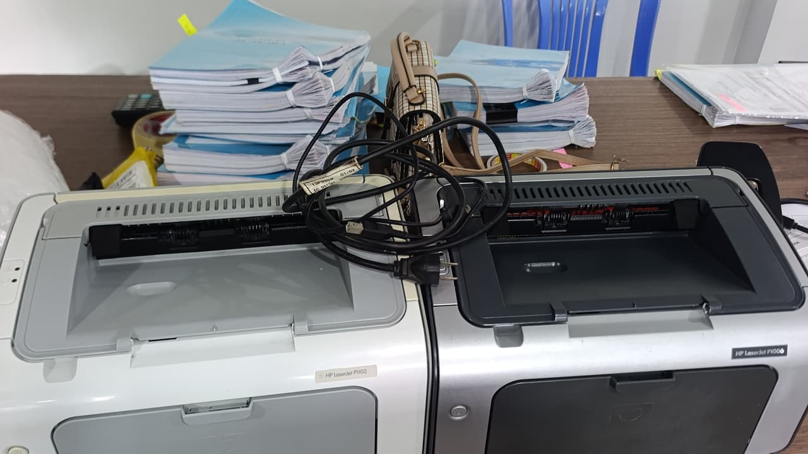

Sửa máy in, nạp mực máy in Bình Chánh tận nơi — nhận cả xưởng và kho
Cửa hàng đặt tại 5/19 Phạm Hùng. Kỹ thuật tới Bình Chánh trong 15 – 60 phút tuỳ xã — xem máy rồi báo giá, anh/chị đồng ý thì mới tháo.

Cửa hàng của chúng tôi nằm ngay trong xã Bình Hưng, nên phần phía bắc của địa bàn này là nhanh nhất trong cả bảy khu — thường 15–25 phút. Nhưng Bình Chánh rất rộng, và đó là điều phải nói thật: tới Vĩnh Lộc hay Tân Nhựt thì có thể hơn một tiếng. Vì vậy chúng tôi không hứa "30 phút có mặt" cho cả huyện. Cách làm trung thực hơn: hẹn khung giờ, và nếu anh/chị gấp thì nói rõ để chúng tôi xếp lại tuyến.
Khách Bình Chánh cũng khác các quận nội thành. Phần lớn là xưởng sản xuất, kho hàng, công ty vận tải — nơi máy in đặt trong môi trường nhiều bụi, nhiệt độ cao, điện không ổn định. Ba yếu tố này làm máy hỏng theo kiểu khác, và sửa chữa chiếm tỷ lệ cao hơn nạp mực.
Thông tin nhanh — Bình Chánh
| Thời gian tới | 15 – 60 phút tuỳ xã |
| Nạp mực laser A4 | từ 80.000đ |
| Máy A3 / photocopy | từ 250.000đ |
| Phun mực hệ bình | từ 150.000đ |
| Giờ làm việc | 08:00 – 19:00 |
| Hoá đơn VAT | Có |
Gọi lẻ hay gộp lượt: cách tiết kiệm thật ở Bình Chánh
Khách Bình Chánh tìm bằng cả "sửa máy in bình chánh", "nạp mực máy in bình chánh", "nạp mực máy in huyện bình chánh" — chúng tôi nhận hết, cùng một giá dịch vụ.
Nhưng vì đường xa, có hai cách đi và chênh lệch rõ. Gọi lẻ một máy: kỹ thuật đi riêng một chuyến, anh/chị được phục vụ theo giờ mình muốn. Gộp lượt: nếu xưởng có nhiều máy, hoặc anh/chị chờ được tới khi chúng tôi có ca khác cùng tuyến, thì đi một chuyến làm nhiều việc.
Với xưởng và kho, chúng tôi khuyên kiểm tra định kỳ theo quý thay vì chờ hỏng mới gọi. Môi trường bụi làm trống xước nhanh — phát hiện sớm thì thay trống 180.000đ, để muộn thì hỏng cả hộp mực.
Khu vực Bình Chánh nhận tận nơi
Bình Hưng — cửa hàng của chúng tôi ở ngay đây, tới nhanh nhất
Phong Phú, Đa Phước, Hưng Long
Vĩnh Lộc A, Vĩnh Lộc B — các xưởng và kho
Tân Kiên, Tân Nhựt, Tân Quý Tây
An Phú Tây, Bình Chánh, Quy Đức
Khu công nghiệp Vĩnh Lộc và Lê Minh Xuân (hẹn trước thủ tục cổng)
Xưởng và kho: ba thứ phá máy in nhanh nhất
Bụi
Bụi xưởng lọt vào buồng mực, bám lên trống rồi bị trục sạc miết vào — gây sọc dọc chỉ sau vài tháng. Giải pháp không phải nạp mực thường hơn, mà là đặt máy trong tủ kín hoặc phòng riêng, và vệ sinh buồng mực định kỳ.
Nhiệt
Nhà xưởng mái tôn buổi trưa rất nóng. Mực trong hộp mềm ra, dễ vón và lem. Nếu được, chuyển máy sang chỗ mát nhất trong xưởng — thay đổi nhỏ này giảm hỏng đáng kể.
Điện không ổn định
Sụt điện khi máy đang nung lô sấy là nguyên nhân hàng đầu làm cháy bo nguồn. Một bộ ổn áp hoặc UPS nhỏ rẻ hơn nhiều so với thay bo mạch. Chúng tôi nói điều này kể cả khi nó làm chúng tôi mất một đơn sửa chữa.
Tới trong bao lâu, tính theo từng khu của Bình Chánh
Số dưới đây là thời gian thật từ lúc anh/chị gác máy tới lúc kỹ thuật có mặt, đo trong giờ hành chính ngày thường.
| Khu | Thời gian tới | Ghi chú |
|---|---|---|
| Bình Hưng, Trung Sơn | 10 – 20 phút | Cửa hàng nằm ngay trong xã này, nhanh nhất cả bảy khu. |
| Phong Phú, An Phú Tây | 20 – 35 phút | Theo Nguyễn Văn Linh và Quốc lộ 50. |
| Đa Phước, Hưng Long, Quy Đức | 35 – 55 phút | Đường dài, nên hẹn khung giờ thay vì gọi gấp. |
| Tân Kiên, Tân Quý Tây | 35 – 50 phút | Qua tỉnh lộ, kẹt vào giờ xe tải ra vào. |
| Tân Nhựt | 45 – 60 phút | Đường nhỏ đoạn cuối, đi xe máy vào được. |
| Vĩnh Lộc A, Vĩnh Lộc B | 50 – 75 phút | Xa nhất địa bàn. Gộp nhiều máy một chuyến là hợp lý. |
| KCN Vĩnh Lộc, KCN Lê Minh Xuân | hẹn theo khung giờ | Phải khai báo cổng trước, không nhận gấp. |
Giờ cao điểm sáng 7–8h và chiều 17–18h cộng thêm khoảng 10 phút. Ca đặt trước thì đúng khung giờ hẹn.
Bụi, nhiệt và điện: máy in ở xưởng Bình Chánh hỏng kiểu gì
Những lỗi dưới đây kỹ thuật mang sẵn vật tư nên xử lý xong ngay trong một lượt, không phải hẹn lại.
| Bản in bị gì | Thường là do | Xử lý tại chỗ |
|---|---|---|
| Sọc đen dọc trang chỉ sau vài tháng | Bụi xưởng lọt vào buồng mực, bám lên trống rồi bị trục sạc miết vào. | Thay trống 180.000 – 280.000đ. Giải pháp lâu dài là che máy, không phải nạp mực dày hơn. |
| Mực vón cục, bản in lem từng mảng | Nhà xưởng mái tôn buổi trưa rất nóng, mực trong hộp mềm ra. | Vệ sinh buồng mực và nạp lại; nên chuyển máy sang chỗ mát nhất trong xưởng. |
| Máy chết hẳn, không lên nguồn | Sụt điện lúc máy đang nung lô sấy — nguyên nhân hàng đầu làm cháy bo nguồn ở xưởng. | Kiểm tra bo tại chỗ; hỏng nặng phải mang về. Một bộ ổn áp nhỏ rẻ hơn thay bo nhiều. |
| Kẹt giấy liên tục dù giấy mới | Giấy hút ẩm trong kho, mép giấy cong nên vào lệch. | Vệ sinh đường giấy và bánh kéo; bảo quản giấy trong bao kín là hết. |
| Bản in nhoè, sấy không ăn | Lô sấy chai vì chạy quá tải liên tục nhiều ca. | Thay bao lụa hoặc lô sấy 250.000 – 650.000đ. |
| Máy báo hết mực dù hộp còn mực | Chip đếm hết số trang, thường gặp ở máy dùng chung cho cả xưởng. | Thay chip 80.000 – 150.000đ. |
Nói giúp mấy thứ này lúc gọi, đỡ mất một lượt đi lại
Xã nào trong Bình Chánh
Địa bàn này rộng gấp nhiều lần một quận nội thành. Biết đúng xã là chúng tôi báo được khung giờ thật — Bình Hưng 10–20 phút nhưng Vĩnh Lộc có thể hơn một tiếng.
Thủ tục cổng nếu ở khu công nghiệp
KCN Vĩnh Lộc và Lê Minh Xuân duyệt người và phương tiện trước. Gửi thông tin sớm một buổi thì vào được trong ngày.
Danh sách máy trong xưởng
Xưởng thường có nhiều máy khác hãng. Gửi trước danh sách hoặc chụp nhãn hộp mực để kỹ thuật mang đủ mực, chip và trống, đi một lượt là xong.
Máy đang đặt ở chỗ nào
Đặt cạnh cửa xưởng hay dưới mái tôn là hai môi trường khác hẳn nhau. Biết trước thì kỹ thuật tư vấn luôn chỗ kê máy, đỡ hỏng lại sau vài tháng.
Bảng giá đầy đủ theo mã hộp mực
Giá như nhau cho cả bảy khu — chỉ thời gian tới là khác.
Máy hỏng chứ không chỉ hết mực?
Xem bảng triệu chứng – nguyên nhân để biết việc nào xử lý được ngay tại chỗ.
Câu hỏi thường gặp — khách Bình Chánh
Sửa máy in Bình Chánh có đi tới Vĩnh Lộc, Tân Nhựt không?
Có, nhận toàn địa bàn. Nhưng các xã xa như Vĩnh Lộc, Tân Nhựt, Quy Đức thì chúng tôi hẹn khung giờ thay vì hứa 30 phút — đường xa, nói thật để anh/chị chủ động công việc.
Phí đi lại xa có tính thêm không?
Giá niêm yết đã gồm công đi lại trong địa bàn khu Nam. Với các xã xa nhất của Bình Chánh, nếu chỉ một máy và cần đi gấp riêng một chuyến, kỹ thuật sẽ nói rõ phụ phí trong cuộc gọi — trước khi lên đường, không phải lúc đã tới.
Xưởng có 5–6 máy, làm được trong một buổi không?
Được. Anh/chị gửi trước danh sách dòng máy, chúng tôi mang đủ mực và vật tư cho từng loại rồi làm gọn trong một buổi. Cách này tiết kiệm hơn gọi lẻ từng máy.
Có nhận bảo trì định kỳ cho kho và xưởng không?
Có, và với môi trường nhiều bụi thì chúng tôi khuyến nghị. Lịch thường theo quý: vệ sinh buồng mực, kiểm tra trống và bánh kéo giấy, thay trước những gì sắp hỏng thay vì chờ máy dừng giữa lúc cần in.
Ở Vĩnh Lộc gọi thì bao giờ có người tới?
Thường 50 – 75 phút và chúng tôi hẹn khung giờ chứ không hứa gấp. Nói thẳng vậy để anh/chị sắp xếp công việc, thay vì ngồi chờ một lời hứa 30 phút không có thật.
Nạp mực máy in Bình Chánh giá bao nhiêu?
Giá như nhau cho cả bảy khu: laser A4 từ 80.000đ, Brother và Samsung 120.000đ, máy A3 từ 250.000đ. Đi xa không tính thêm phí — chỉ thời gian tới là khác.
Có xuất hoá đơn VAT cho công ty không?
Có. Gửi thông tin xuất hoá đơn qua Zalo lúc đặt lịch là chúng tôi chuẩn bị sẵn.
Đặt nạp mực tận nơi Bình Chánh
Kỹ thuật tới trong 15 – 60 phút tuỳ xã. Xem máy rồi báo giá, anh/chị đồng ý mới tháo.